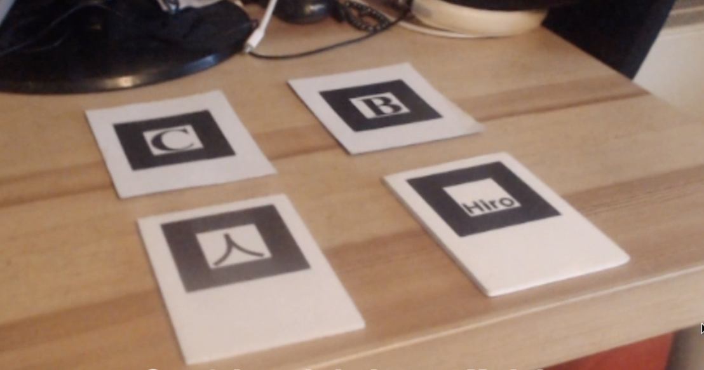

AR.js
What is it?
AR.js library is used to add a layer of virtual objects over reality. When input comes in the form of a video, we can use AR.js to -
-Add objects in the frame
-Detect still 2D images & Area markers to overlay content
-Make multiple users see the same content if they are in the same location
How will you incorporate it within your project?
Some ideas:-
-Turning the room of the user into a lounge with a neon theme when it is looked at through the person's phone. There can be cues in the environment that will be picked up by the sound sensor and the source of the noise will be turned into an object depending on the features of the sounds it emits.
-When looking through a webcam, the person will appear to be sitting in a car in which when you look through the windows, you would see (fig.1) sort of surroundings
Are there any specific technical limitations?
The technical limitations will be that in order to map the environment of the person, "Markers"(fig2) will be needed. These would be important in order to correctly map the surroundings of the person.

FIG.1

FIG.2